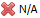

Consumed Templates window
The Consumed Templates window allows the user to view the tracking information from a consumed template(s). The template tracking information links the template to the repository which was used to create it using the Save as template process.
The Consumed Templates window also allows the user to:
- trigger the Search for update action to search for a new revision of the consumed component template(s)
- trigger the deletion of a configuration, which allows the user to permanently delete the selected root template configuration
- trigger the Add latest template revision wizard to consume the latest component template revision
- highlight template components coming from a consumed template in the Explorer window using the stamp option
- open a consumed component template in its dedicated editor
- lock a consumed template or a template component
- view the selected template history details using the History window.
The Consumed Templates window can be opened from the Explorer window at the solution level, using the View consumed templates option.
| Only templates with tracking information will be displayed in the Consumed Templates window. | |
|
To enable the template tracking feature on a template, it must be packaged using |
|
|
To enable the template tracking feature on a legacy template, the template must be repackaged using |
|
|
The Consumed Templates window is only available to users with the Solution Administrator role. |
|
|
Consumed template information saved in a solution can also be exported. |
|
|
A greyed out row(s) indicates that the item (template or template component) is the same item as the selected item (highlighted in blue - for example, Entity Model) but has a different configuration; for example, its path or name is different. This feature does not apply to a folder. |
The Consumed Templates window consists of the following:
Search for all updates - search for a new revision of all the consumed component template(s), in both the local and remote repositories.
During the Search for update process, if a template(s) has been consumed from a remote repository, then the Remote content repository login dialog will be triggered. A separate dialog will be displayed (populated with the saved remote repository connection parameters, except for the user credentials) for each remote repository that has been detected by this process.
|
The Search for update process is only available for a component template. It can be triggered from the Consumed Templates window toolbar (Search for all updates icon), or in the context menu at template level (Search for update...). |
Once the Search for update process has been completed, the state for each of the consumed component template(s) will be updated (based on the search result) in the Status column. The latest revision of the component template (New <version number> available) can be consumed using the Update to latest revision... option from the context menu at template level.
 - opens the Confirm configuration deletion dialog, which allows the user to permanently delete the selected root template configuration.
- opens the Confirm configuration deletion dialog, which allows the user to permanently delete the selected root template configuration.
|
The configuration deletion action is also available via the context menu. Right click on a root template configuration name in the Template Structure table column and select Delete. |
Templates Structure - displays the consumed template(s) and all its components in a hierarchical tree structure.
|
The configuration setting used in the Add from template process is indicated next to the template name in brackets. For example, ABC template (BPM1) <template name> (<configuration name>). |
Stamp - displays the Stamp (<colour> <colour name>) that has been applied to a consumed template. Stamps are available in a choice of standard colours. They allow a user who have access to the solution to identify which template a component belong to, from the Explorer window.
Status - displays the state of the consumed template and component in the solution repository compared to their version in the template within the Content Repository.
Template level:
 New <version number> available - there is a new revision of this template available for consumption in the content repository
New <version number> available - there is a new revision of this template available for consumption in the content repository
- the repository is not available or the template has been removed from the repository.

Component level:
-
 Up to date - the revision of the consumed component in the solution repository is the same as the template revision
Up to date - the revision of the consumed component in the solution repository is the same as the template revision - Out of date - the revision of the consumed component in the solution repository is lower than the template revision
- Ahead - the revision of the consumed component in the solution repository that has been updated by the user is higher than the template revision
 Removed - the consumed component has been removed from the solution
Removed - the consumed component has been removed from the solution- Unknown - the template was created using a component from the user area or from a previous version of the software
- Skipped - the consumed component has been skipped due to a name conflict and has not been consumed in the solution (i.e. the conflict resolution for this component has been set to keep the local version)

Actions - displays the changes that have been made to the consumed component in the solution:
 Modified - this component has been modified
Modified - this component has been modified- Renamed - this component has been renamed
- In recycle bin - this component has been moved to the Recycle Bin
- Restored - this component has been restored to the solution from the Recycle Bin
 Moved - this component has been moved from its original location, from which it was consumed into a different location
Moved - this component has been moved from its original location, from which it was consumed into a different location Conflict - there is a mismatched conflict(s) between the consumed template component and the component in the solution. There is no automatic resolution possible for these components, both are kept in the target solution where a manual resolution is required.
Conflict - there is a mismatched conflict(s) between the consumed template component and the component in the solution. There is no automatic resolution possible for these components, both are kept in the target solution where a manual resolution is required.  Resolved - this component has a conflict(s) and has been removed from the solution.
Resolved - this component has a conflict(s) and has been removed from the solution.


Lock - indicates if a template component is locked or unlocked
 Lock - this component has been locked (an empty cell indicates that a component is unlocked)
Lock - this component has been locked (an empty cell indicates that a component is unlocked)

Component path in solution - displays the consumed template component path in the solution
Notes - indicates if a template component has a note attached that has been created by the user during the save as template process
 Bold Notes icon - this component has an attached note. Its content can be viewed in the Notes area below the table columns (or using the tooltip)
Bold Notes icon - this component has an attached note. Its content can be viewed in the Notes area below the table columns (or using the tooltip) Grey Notes icon - there is no note attached to this component.
Grey Notes icon - there is no note attached to this component.


{kind=link}
{kind=link}
{kind=link}
{kind=link}
{kind=link}
{kind=link}
{kind=link}
{kind=link}
{kind=link}
{kind=link}
By default, the following columns will be hidden from view. To show or hide a column, right click on any column header and select the column name of your choice.
Consumed revision - displays:
- the source component revision that has been consumed in the solution,
- N/A for a template created from a previous version of the software or
- Local based on <revision number> of the template created in the user area.
Consumption date - displays the date and time the template was consumed into the solution
Repository - displays the repository type (local or remote repository URL details) used to consume the template
Source revision - displays the component version (revision) in the Solution Repository which was used to create the template
Version - displays the template version number assigned when it was saved
Various options are available in the following context menus that are accessible from three levels:
Search for update... - search for a new revision of the selected component template in the local or remote repository
During the Search for update process, if the selected component template has been consumed from a remote repository, then the Remote content repository login dialog will be triggered. The dialog will be populated with the saved remote repository connection parameters, except for the user credentials.
|
The Search for update process is only available for a component template. It can be triggered from the Consumed Templates window toolbar (Search for all updates icon), or in the template level context menu (Search for update...). |
Once the Search for update process has been completed, the state of the selected component template will be updated (based on the search result) in the Status column. The latest revision of the component template (New <version number> available) can be consumed using the Update to latest revision... option.
Update to latest revision... - opens the Add latest template revision wizard. It allows the user to consume the latest revision of the component template.
Lock... - displays the selected template components in the Component Chooser screen of the Lock wizard
Unlock... - displays the selected template components which are locked in the Component Chooser screen of the Unlock wizard
Stamp - allows the user to apply a Stamp (available in a choice of standard colours) to the selected template and its components
To apply the Stamp, right click on the template row and select the Stamp that you want to use from the Stamp drop down list. The chosen Stamp icon (<colour> <colour name>) will be displayed in the:
- Stamp column next to the selected template and
- Explorer window for the template components (allows users who have access to the solution to identify which components are coming from the stamp template)
The Stamps can be removed from the template using the Remove... option in the Stamp drop down list.
Lock... - displays the content of the selected folder in the Component Chooser screen of the Lock wizard
Unlock... - displays the content of the selected folder that is locked in the Component Chooser screen of the Unlock wizard
Open - opens the selected template component in its dedicated editor
Select in Explorer - highlights the selected template component in the Explorer window. Any component that is hidden in a folder(s) will have its tree structure expanded.
History... - displays the selected template component history details in the History window
Lock... - displays the selected component in the Component Chooser screen of the Lock wizard
Unlock... - displays the selected component that is locked in the Component Chooser screen of the Unlock wizard